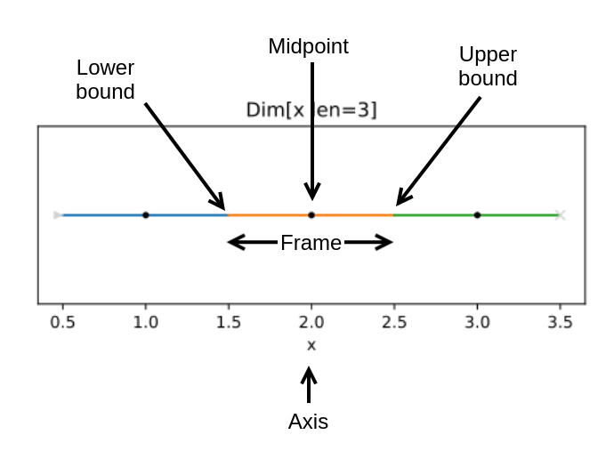

Technical Terms#
This page draws together some of the technical terms used throughout the documentation. Consider a 1D line scan:
Axis#
A fixed reference that can be scanned, i.e. a motor or the Frame DURATION.
In the diagram above, the Axis is x. Spec.axes will return the Axes that
should be scanned for a given Spec.
Point#
A single or multidimensional location in scan space. In the diagram above, each
Frame is made up of lower, midpoint and upper Points. Midpoints are
available as an interator from Spec.midpoints. Arrays of these are available
as Frames.lower, Frames.midpoints and Frames.upper.
Frame#
A vector of three Points in scan space: lower, midpoint, upper. They describe the trajectory that should be taken while a detector is active while fly scanning. In the diagram above each Frame is denoted by a different coloured section.
Stack of Frames#
A repeatable, possibly snaking, series of Frames along a number of Axes. In the diagram above, the whole Line produces a single Frames
object, while a grid scan would be a stack of two Frames objects. A stack of
Frames objects are produced by Spec.calculate.
See also
Path#
A consumable route through a _stack_. If the Line in the above diagram was
stacked within another line of length 5, then the Path would contain 15 Frames. A Path is created from a list of Frames objects.